Fragalysis User Guide
Fragalysis is a web-based platform for the visualisation, comparison, and analysis of fragment-bound protein crystal structures, assay measurements, and follow-up virtual ligand screens. It can effectively be divided into:
Experimental fragment screening data processed via XChem Align and uploaded to Fragalysis, curated and downloaded via the “left-hand side” (LHS) of Fragalysis.
Computed follow-up designs from virtual compound sets uploaded to Fragalysis, curated and downloaded via the “right-hand side” (RHS) of Fragalysis.
Getting started
Fragalysis can be used to explore data in a number of ways:
Experimental Structures (LHS)
Computed Structures (RHS)
Jupyter Notebooks
Programming Interface (API)
Navigating the homepage
Navigating to the Fragalysis homepage for the first time you will be prompted to log in with your FedID. This will allow you to view the “private targets” associated with your Diamond user account, alongside public and legacy targets:

The Fragalysis “viewer” interface
The Fragalysis viewer has been customised for fragment screening workflows, is fully interactive and runs directly in your browser. When opening a target, you will be presented with an interface that allows you to interact with and curate data:
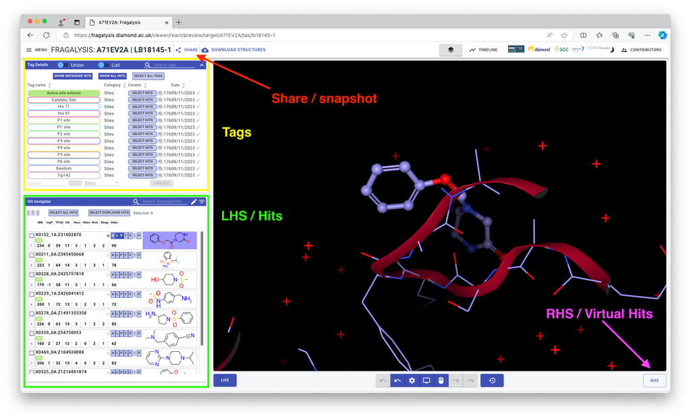
Share/snapshot this allows you to create and share a permanent link to your exact Fragalysis state
Tags This is how you can control which hits are visible by sites and other categories
LHS / Hits Here you can navigate all the hits and add visualisations to them (The Tags panel also belongs to the LHS)
The visualisation buttons are shared also with virtual hits (RHS) and work as follows:
All : show ligand in (CPK), protein side chains (lines), and interactions.
Ligand: Ligand (CPK)
Protein: Protein side chains (lines)
Interactions: Interactions
Surface: Electrostatic surface of the protein
Electron Density: Experimental electron density
Vectors: Possible vectors for elaboration
Controlling the 3D viewer
Fragalysis uses NGL viewer under the hood to visualise 3D models, inspect binding sites, and compare multiple structures at once. It can be easily controlled with mouse and keyboard inputs:
Key / Mouse action |
Effect |
|---|---|
scroll |
Zoom scene |
scroll + Ctrl |
Move near clipping plane |
scroll + Shift |
Move near clipping plane and far fog |
scroll + Alt |
Change isolevel of isosurfaces |
drag right |
Pan / translate scene |
drag middle |
Zoom scene |
drag left |
Rotate scene |
drag + Shift + right |
Zoom scene |
drag left + right |
Zoom scene |
drag + Ctrl + right |
Pan / translate hovered component |
drag + Ctrl + left |
Rotate hovered component |
click pick (middle) |
Auto view picked component element |
hover pick |
Show tooltip for hovered component element |
i |
Toggle stage spinning |
k |
Toggle stage rocking |
p |
Pause all stage animations |
r |
Reset stage auto view |
Geometric filtering
Geometric filtering allows you to limit hits based on their position in 3D space. When you click any structure in the NGL Viewer, a green semi-transparent sphere will appear. After clicking Apply in the Radius selection dialog, only hits that intersect with the sphere will be shown in the hit navigator.
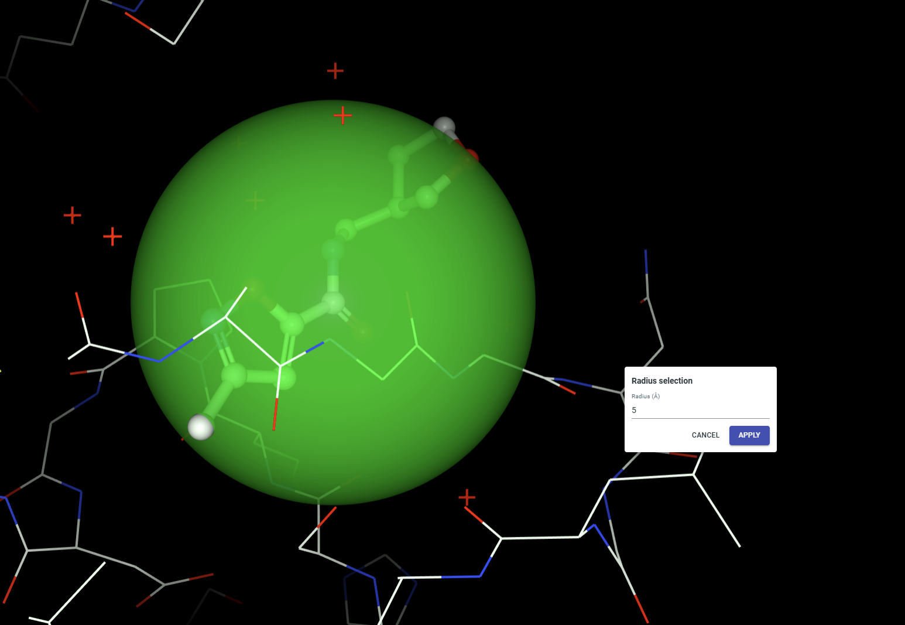
This feature is ON by default and can be toggled in the Advanced Search dialog. If you turn it off, any existing geometric filtering is cleared and no spatial filtering will be applied.
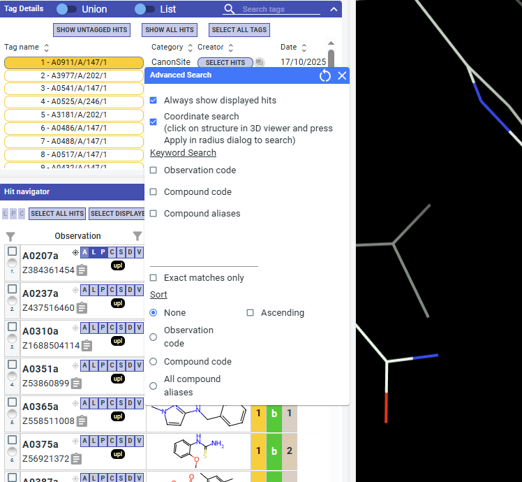
Browsing experimental data (LHS)
The left-hand-side (LHS) user interface of Fragalysis allows you to select experimental data for display, download, and computation.
There are three panels Tag Details, Hit Navigator, and Snapshot:
Tag Details
Tags are user-defined labels used to organise, filter, and annotate structures and fragments within Fragalysis. They provide a flexible way to group related data and share interpretation without modifying the underlying experimental data. This section details how tags can be used to filter experimental data. To add and edit tags see the curating experimental (LHS) data page.
All tags assigned to left-hand side data can be managed in this panel:
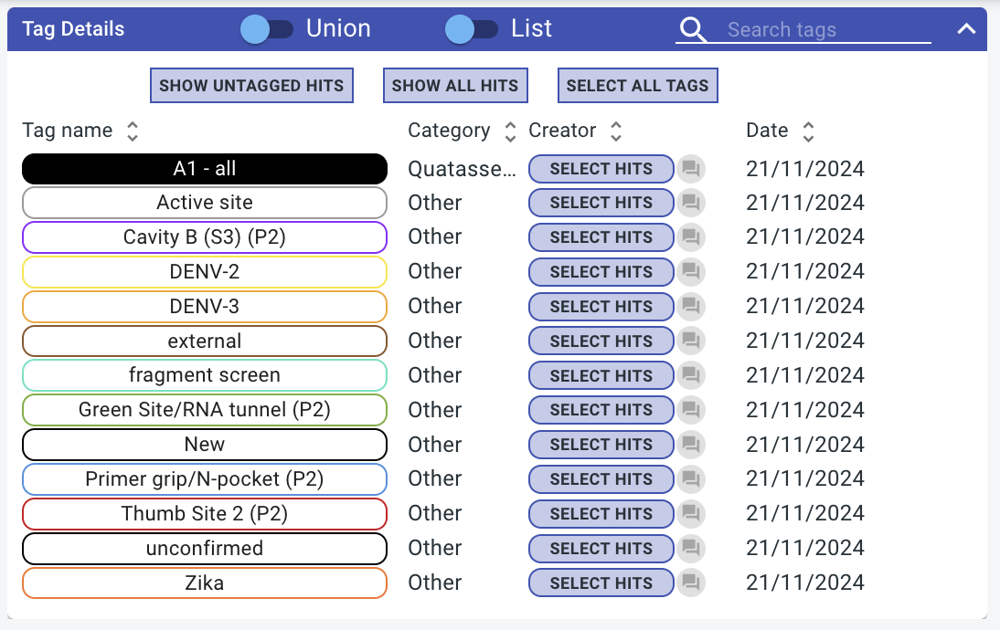
Select tags to show datasets assigned to that tag in the Hit navigator. The union / intersection toggle at the top of the page can be used to determine the behaviour when multiple tags are selected:
Union: Display datasets that are tagged with at least one of the selected tags
Intersection: Display datasets that are tagged with all of the selected tags
Control |
Description |
|---|---|
SHOW UNTAGGED HITS |
Displays only datasets that do not have any tags assigned. Useful for identifying new or unreviewed fragment hits. |
SHOW ALL HITS |
Displays all datasets, ignoring the current tag selection. Overrides any active tag filters. |
SELECT ALL TAGS |
Selects all available tags in the tag list. Does not automatically select hits in the hit navigator. |
SELECT HITS (per tag) |
Activates selection checkboxes for all datasets associated with the chosen tag. Useful for bulk operations on tagged datasets. |
Snapshots
Snapshots are saved views of the current analysis state, allowing you to quickly return to a specific set of selected hits and visualisation settings, and making it easy to share or revisit a particular analysis.
{kind=link}
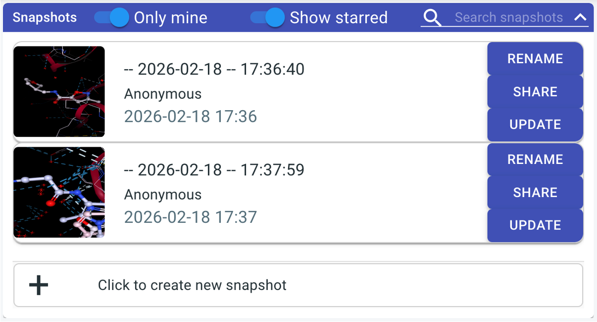
Creating direct URLs to specific views
To link to specific datasets within a target, the following syntax is supported:
Specifying the target and proposal
The following URL takes you to the target with:
name:
A71EV2Atarget access string (tas):
lb32627-66:
https://fragalysis.diamond.ac.uk/viewer/react/preview/target/A71EV2A/tas/lb32627-66
Using the direct URL syntax
You can also create URLs that display specific datasets. To use this functionality you have to use this base URL including the direct command:
https://fragalysis.diamond.ac.uk/viewer/react/preview/direct/
Examples
e.g. showing observations with ligands where compound alias contains substring ASAP:
target/A71EV2A: specifies the target nametas/lb32627-66: specifies the target access stringcompound/ASAP/L: shows the ligand (L) representation for allcompoundaliases containingASAP
e.g. showing observations with ligands where compound alias is exactly ASAP-0016733-001:
target/A71EV2A: specifies the target nametas/lb32627-66: specifies the target access stringcompound/ASAP-0016733-001/L/exact: shows the ligand (L) representation for exactcompoundaliases matchASAP-0016733-001
Curating experimental data (LHS)
XChemAlign transforms crystallographic data into a biological reference frame. This involves matching ligand neighbourhoods across crystalforms, assemblies, and chains onto a appropriate reference structures. This process generates various sites which make their way into Fragalysis via tags. All tag information is also included in the metadata.csv in any Fragalysis download.
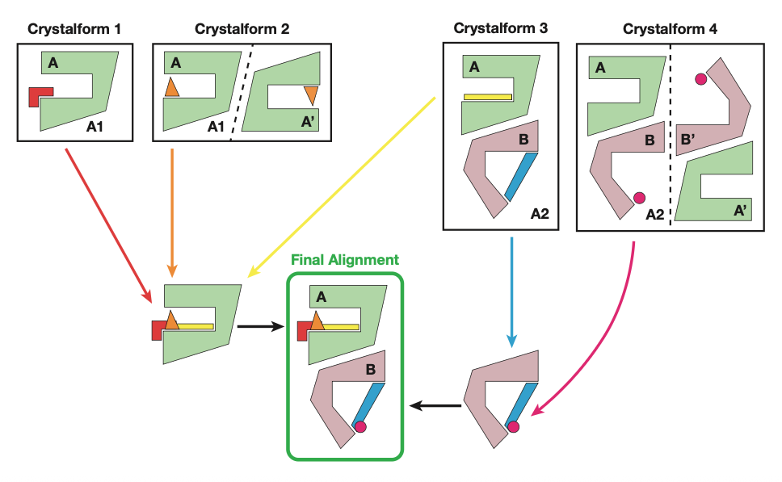
Indicating merging hypotheses
For Fast Forward Fragments it is required to create one Curator Tag for each group of fragments that you wish to explore merging. These can often just be all hits in the pockets of interest.
Indicating experimental / model quality
The experimental / model quality can be indicated using the traffic light system:
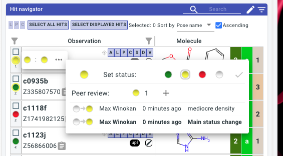
Each observation will have a Main Status, it should be decided in your project who has the final say on this, typically there is one main data owner / structural biologist. All other members are recommended to only add Peer Reviews. These not only have a status, but also allow for a comment.
Uploading assay measurements or computed scores (LHS)
Fragalysis supports annotation of experimental data with text or numeric scores that are linked either to compound codes or observation short codes.
Warning
Do not upload any assay data to a public target that is confidential! Measurements against compounds that do not (yet) have structures will still be accessible to authorised API users.
Creating the assay data CSV
Create a CSV with:
one identifier column, containing either compound codes or observation short codes
as many text/numeric columns as you want
The data type of columns can optionally be specified by an additional row containing
text,int, orfloat
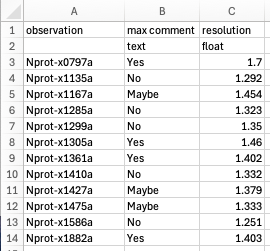
Please note that CDD data can be exported as a CSV and often uploading with minimal manual modification.
Uploading
Log in and open your target of interest
Select
Assay data uploadfrom the menuComplete the form:
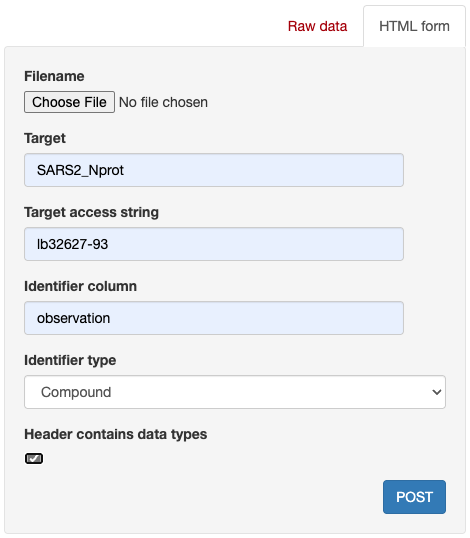
Modifying data type of existing data column
Use the /api/activity_data_curation/ endpoint to change data types of previously uploaded scores
Browsing virtual compound sets (RHS)
Overview of the RHS interface
The right hand side (RHS) is where follow-up designs and their virtual hits are navigated. Follow-up designs are grouped into compound sets, corresponding to each SDF that was uploaded (See Uploading compound sets to the RHS).
Inspirations
The F button on each compound can be used to bring up a modal with the experimental hits used as inspirations / references for the compound design. The same LHS visualisation buttons are available to superimpose the inspiration hit with the follow-up design. When an experimental dataset is displayed, all virtual designs referencing that ligand will have their F icon active.
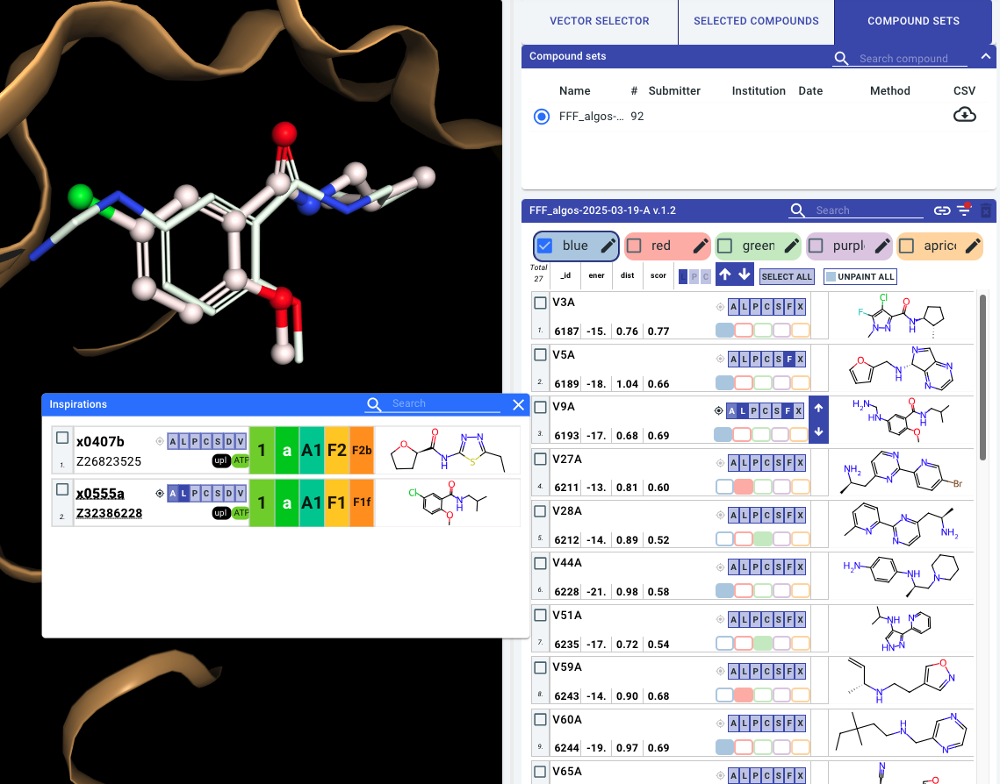
Sorting and filtering
Clicking on the filter icon allows you to sort and filter the compounds by properties present in the uploaded set. Typically you will find scores such as energy_score representing computed binding energy, distance_score representing RMS distance to the fragment inspirations, and score_inspiration which may indicate how well the fragments references have been recapitulated:
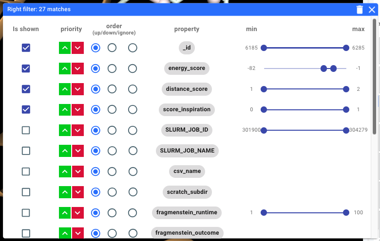
Curating virtual compound sets (RHS)
Colours / painting
You can paint compounds with colours that can be renamed, i.e. “Yes”, “No”, “Maybe”:
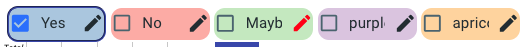
These labels will be assigned to compounds in your session and can be downloaded as a CSV in the “selected compounds” tab
Warning
The state of the Fragalyis RHS does not persist when you refresh or otherwise leave the page. To export a copy of your curations remember to download a CSV:
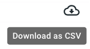
Arrows
Use these arrows to quickly apply the current visualisations to adjacent compounds
This works best when inspirations modal is open, and the inspiration hits and current compound are shown as ligands
Exporting curations
Once you have painted compounds you can export a CSV which can be used to share your curations/review with others:
Compounds from different sets they can be viewed together in the “selected compounds” tab.
Uploading virtual compound sets (RHS)
In order to disseminate non-experimental structures/ligands with Fragalysis, they can be uploaded using the “RHS upload” option in the “Hamburger menu”, which takes you to the viewer/upload_cset endpoint:
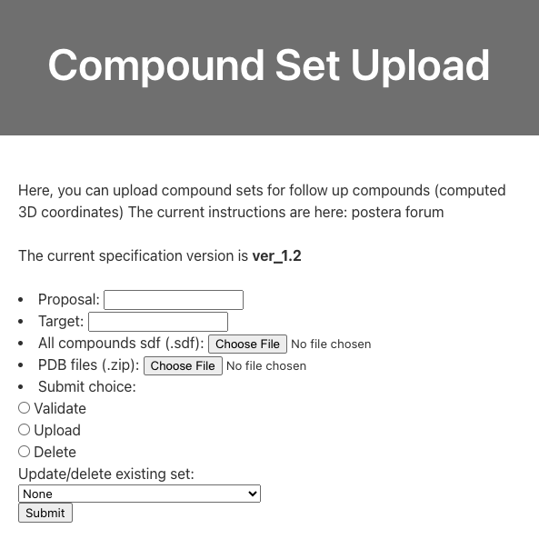
Supported data format
To upload a compound set to the RHS of Fragalysis an SD file (SDF) must be prepared.
Header molecule
Fragalysis requires a header molecule that defines properties for the whole compound set. The molecule and coordinates of the header molecule are completely ignored, however there are required properties:
Property |
Value |
|---|---|
|
|
|
Reference URL for the algorithm / dataset |
|
Compound set submitter’s name |
|
Compound set submitter’s email |
|
Compound set submitter’s institution |
|
Date associated with the data (ISO 8601) |
|
Algorithm / method name for this compound set |
Additionally, if you want to include extra text or numerical properties for ligands in this set you will have to include that property in the header as well with a description value. For example if you want to include a energy_score property with each ligand you will need to include this as a property on the header as well, with a text description:
Property |
Value |
|---|---|
|
|
An example header molecule is provided below.
Ligands
The required properties for each non-header molecule are different:
Property |
Value |
|---|---|
|
compound name |
|
Reference protein (Fragalysis observation short-code, e.g. A0310a) |
|
Reference datasets that inspired this molecule/pose (Fragalysis observation short-code, e.g. A0310a) |
Ligands and proteins (SDF + ZIP of PDBs)
If you have computed custom protein conformations associated with these ligands they can be provided in the upload form as a separate ZIP archive. In this case, your ref_pdb values for each ligand should be the name of the relevant PDB file.
Example Header
ver_1.2
RDKit 3D
14 15 0 0 0 0 0 0 0 0999 V2000
-3.4503 1.0190 -1.1743 C 0 0 0 0 0 0 0 0 0 0 0 0
-2.2533 1.0671 -0.5344 N 0 0 0 0 0 0 0 0 0 0 0 0
-2.1679 -0.0620 0.1865 C 0 0 0 0 0 0 0 0 0 0 0 0
-1.3036 -0.8455 1.1366 C 0 0 0 0 0 0 0 0 0 0 0 0
-0.4390 -1.7388 0.2452 C 0 0 0 0 0 0 0 0 0 0 0 0
0.3763 -0.9521 -0.6603 N 0 0 0 0 0 0 0 0 0 0 0 0
1.4334 -0.1564 -0.1409 C 0 0 0 0 0 0 0 0 0 0 0 0
2.0843 -0.7615 0.8099 N 0 0 0 0 0 0 0 0 0 0 0 0
3.2028 -0.1250 1.4766 C 0 0 0 0 0 0 0 0 0 0 0 0
4.1795 0.3255 0.4069 C 0 0 0 0 0 0 0 0 0 0 0 0
3.7544 1.5811 -0.2821 C 0 0 0 0 0 0 0 0 0 0 0 0
1.9712 1.4810 -0.5890 S 0 0 0 0 0 0 0 0 0 0 0 0
-3.3092 -0.7524 -0.0399 N 0 0 0 0 0 0 0 0 0 0 0 0
-4.0785 -0.0801 -0.8706 O 0 0 0 0 0 0 0 0 0 0 0 0
1 2 2 0
2 3 1 0
3 4 1 0
4 5 1 0
5 6 1 0
6 7 1 0
7 8 2 0
8 9 1 0
9 10 1 0
10 11 1 0
11 12 1 0
3 13 2 0
13 14 1 0
14 1 1 0
12 7 1 0
M END
> <ref_url> (1)
https://github.com/mwinokan/BulkDock
> <submitter_name> (1)
Max Winokan
> <submitter_email> (1)
max.winokan@diamond.ac.uk
> <submitter_institution> (1)
DLS
> <generation_date> (1)
2024-12-02
> <method> (1)
Knitwork_CavB_impure
> <SLURM_JOB_ID> (1)
SLURM_JOB_ID
> <SLURM_JOB_NAME> (1)
SLURM_JOB_NAME
> <csv_name> (1)
csv_name
> <scratch_subdir> (1)
scratch_subdir
> <fragmenstein_runtime> (1)
fragmenstein_runtime
> <fragmenstein_outcome> (1)
fragmenstein_outcome
> <fragmenstein_mode> (1)
fragmenstein_mode
> <fragmenstein_error> (1)
fragmenstein_error
> <exports> (1)
exports
> <HIPPO Pose ID> (1)
HIPPO Pose ID
> <HIPPO Compound ID> (1)
HIPPO Compound ID
> <smiles> (1)
smiles
> <ref_pdb> (1)
protein reference
> <ref_mols> (1)
fragment inspirations
> <original ID> (1)
original ID
> <compound inchikey> (1)
compound inchikey